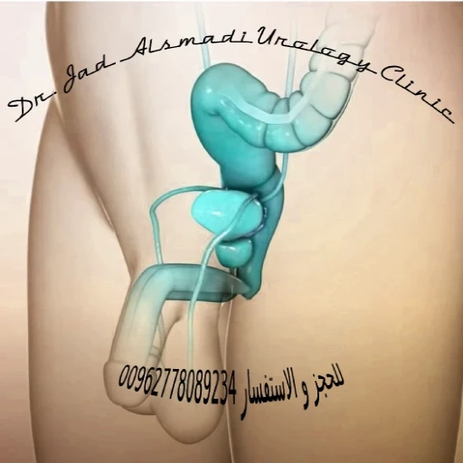

تضخم البروستات الحميد
نظرة عامة على تضخم البروستات الحميد
تضخم البروستاتا الحميد (BPH) هو تضخم أو زيادة حجم غدة البروستاتا لدى الرجال البالغين و تزداد المشكلة مع التقدم في السن. يؤثر على ما يقرب من 50% من الرجال فوق سن 50،وما قد يصل إلى 90% من الرجال فوق سن 80. هذا النمو الزائد للأنسجة يضغط ويعيق مجرى البول؛ الإحليل، مما يقلل من تدفق البول من المثانة وأحيانا يمنعه تماما. مع زيادة الأعراض، يمكن أن تؤثر بشكل كبير على الحياة اليومية للرجل المصاب. و من جانب آخر، فإن الكثير من الرجال المصابين بزيادة حجم البروستات ليس لديهم أعراض ناتجة عن هذه الزيادة في الحجم. إذاً ليس من الواضح لماذا يصاب بعض الرجال بأعراض تضخم البروستاتا الحميد أو أعراض المسالك البولية والبعض الآخر لا. تتضخم البروستاتا عادة إلى حد ما في جميع الرجال مع تقدم العمر، على الرغم من أن ليس كل الرجال يحتاجون إلى العلاج. وجود الهرمونات؛ خاصة الهرمون الذكري، مهم جداً في تطور تضخم البروستاتا الحميد، ولكن هذه الهرمونات لا تسبب؛ وحدها، الحالة المرضية المعروفة بتضخم البروستات الحميد. و من المثير للإهتمام أيضاً معرفة أن ممارسة الجنس؛ حتى و لو بشكل عالي التكرار، لا يزيد من فرص تطور تضخم البروستاتا الحميد عند الرجال.

إذا كنت تعاني من أعراض تضخم البروستات الحميد، فأنت لست وحدك من يعاني من هذه الأعراض. فتضخم البروستاتا الحميد هو أحد الأسباب الرئيسية التي تجعل المرضى يزورون دكتور المسالك البولية.
أعراض تضخم البروستات الحميد
عادةً ما تبدأ أعراض تضخم البروستات الحميد بالظهور بعد عُمر ال 45 سنة. و هذا لا يعني انعدام تطوُّر هذه الأعراض في أعمار أقل من ذلك؛ حيث أن مرض تضخم البروستات الحميد موجود بنسبة ثمانية بالمئة من الرجال بين عمر 30 سنة الى عمر ال 40. إذاََ تظهر أعراض تضخم البروستات الحميد بمرور الوقت وقد تتزايد في حدتها تدريجيا على مر السنين. ومع ذلك، يعاني بعض الرجال من تضخم البروستاتا الذي يسبب أعراضا قليلة أو معدومة، بينما يعاني الرجال الآخرون من أعراض تضخم البروستاتا الحميد التي تتحسن لاحقا أو تبقى كما هي. و بعض الرجال لا ينزعجون من أعراضهم على الرغم من وجودها، في حين أن البعض الآخر يزعجهم كثيرا. لكن في في نسبة صغيرة من الرجال، يمكن أن يسبب تضخم البروستاتا الحميد غير المعالج احتباس البول، مما يعني أن الرجل يصبح غير قادر على إفراغ المثانة. يزداد خطر الإصابة باحتباس البول مع تقدم العمر ومع ازدياد الأعراض. و أيضاً في حال التوقف عن العلاج.
قد يسبب تضخم البروستاتا الحميد أحد أو بعض أعراض المسالك البولية التالية:
- الحاجة إلى التبول بشكل متكرر ليلا و نهارا
- ضعف دفع البول أو تدفق بطيء
- الشعور بأن المثانة لا تفرغ تماماً
- توقُّف البول و عودته لاإرادياً
- الحاجة المُلِحَّة للتبول
- صعوبة أو تأخير في بدء التبول
- فقدان السيطرة أو التحكم أحياناً (السلس البولي)
من المهم أيضاََ معرفة أنه في حال وجود الدم مع البول؛ أي البيلة الدموية، فيفضل عدم الإفتراض أنها من تضخم البروستات الحميد مباشرة، و مراجعة دكتور المسالك البولية.
تشخيص تضخم البروستات الحميد
لمعرفة ما إذا كان تضخم البروستاتا الحميد أو مشكلة أخرى تسبب أعراضك، سيطرح عليك استشاري المسالك البولية أسئلة تفصيلية عن هذه الأعراض؛ و تسمى هذه العملية بالسيرة المَرَضية، ثم يقوم بإجراء الفحص السريري، و من بعد ذلك إجراء اختبارات الدم والبول و التصوير بالألتراساوند؛ ويفضل إجراء فحص قوة تدفق البول أيضاً، فحص تدفق البول. وأغلب هذا التقييم الأولي يعتبر روتينياََ في الفحص لتضخم البروستات الحميد. أما عن الإجراءات التشخيصية الإضافية فقد يتم؛ في حالات معينة، اللجوء للتالي:
- تصوير البروستات بصور متقدمة مثل الألتراساوند عن طريق المستقيم أو التصوير الطبقي أو تصوير الرنين المغناطيسي للبروستات.
- تنظير المثانة؛ سواءاََ تنظير المثانة الإعتيادي أو تنظير المثانة بالمنظار المرن.
- تخطيط المثانة/ تخطيط ديناميكية المثانة.
علاج تضخم البروستاتا الحميد
ما هي مضاعفات مرض تضخم البروستات في حال عدم العلاج؟
من المعروف أنَّ تضخم البروستات الحميد قد يؤدي الى حصر البول الحاد؛ و هو عدم القدرة على التبول فجأةً. و قد يؤدي حصر البول الحاد؛ خاصة في حال تكرار حصوله، إلى ضعف في المثانة. و ضعف المثانة يعني عدم القدرة على تفريغ المثانة بشكل كلي وقد يكون هذا الضعف دائما و لا يتحسن. بلإضافة الى ذلك؛ فإن عدم تفريغ المثانة بشكل كامل ينتج أيضاََ عن تطور مراحل مرض تضخم البروستات الحميد دون حصول حصر البول الحاد. و كل هذا قد يؤدي الى التهابات متكررة في المسالك البولية، و تكون الحصى في المثانة، و أحياناََ تكون جيوب في المثانة. و عندما تصل المثانة الى مرحلة تكوين التليفات و الجيوب فإنها غالباََ تكون قد وصلت الى مراحل اللارجعة في استعادة وضائفها. ويجب أن لا ننسى أن حصر البول الحاد و حصر البول المزمن قد يؤديان الى ارتفاع وضائف الكلى؛ أي الفشل الكلوي. و يعتبر الفشل الكلوي هو أخطر مضاعفات تطور مرض تضخم البروستات. و الآن ماذا عن ورم البروستات؛ هل حدوث سرطان البروستات يعتبر من مضاعفات تضخم البروستات الحميد؟ الجواب هو لا. لكن قد يتصاحب حدوث المشكلتين معاً. أي أنَّ المرضى المصابين بمرض تضخم البروستات قد يصابون بسرطان البروستات؛ لكن بشكل غير مرتبط بتضخم البروستات بحد ذاته.
هناك مجموعة من خيارات العلاج المتاحة لعلاج تضخم البروستاتا الحميد بما في ذلك التعديلات السلوكية على نمط الحياة والأدوية والجراحة.
تغييرات نمط الحياة: قد تكون التعديلات السلوكية أوالعلاجات السلوكية مفيدة، خاصة كعامل مساعد للأدوية. تشمل التغييرات في نمط الحياة؛ في حال تضخم البروستات الحميد و أعراضه، تجنب السوائل قبل النوم أو قبل الخروج وكذلك تقليل استهلاك مدرات البول الخفيفة مثل الكافيين والكحول. كما و يجب على جميع الرجال المصابين بتضخم البروستاتا الحميد تجنب الأدوية التي يمكن أن تؤدي إلى تفاقم الأعراض أو تسبب احتباس البول. وتشتمل هذه الأدوية على بعض مضادات الهيستامين ومزيلات الاحتقان. و من ضمن التغييرات على نمط الحياه؛ تدريب عضلات قاع الحوض و اللذي قد يكون مفيدا بشكل خاص للمرضى الذين يعانون من أعراض الإلحاح وعدم التحمل كثيراً.
الأدوية: تشمل أنواع الأدوية المستخدمة لعلاج تضخم البروستاتا الحميد حاصرات ألفا ومثبطات فوسفوديستراز ومثبطات ألفا المختزلة.
العمليات: و أهمها عمليات البروستات عبر الإحليل. إذا لم تخفف الأدوية من أعراض تضخم البروستاتا الحميد، فقد يكون من الأفضل إزالة البروستاتا حيث يتم تنفيذ معظم العمليات من خلال مجرى البول باستخدام منظار خاص. كل نوع من هذه العمليات له مزايا وله عيوب، ويعتمد اختيار أفضل عملية على حجم و شكل غدة البروستاتا، وتفضيلاتك. يمكن أن يساعدك استشاري المسالك البولية في اختيار أفضل خيار للعلاج.
ملخص تضخم البروستات الحميد
تضخم البروستات الحميد (BPH) هو حالة شائعة تؤثر على غدة البروستاتا لدى الرجال البالغين، وتزداد انتشارها مع التقدم في العمر. يمكن أن يسبب أعراضًا مزعجة مثل التبول المتكرر، ضعف تدفق البول، والشعور بعدم إفراغ المثانة بالكامل. يعتمد التشخيص على الفحص السريري والاختبارات التشخيصية. تتضمن خيارات العلاج تغييرات في نمط الحياة، الأدوية، والعمليات الجراحية. من المهم استشارة أخصائي المسالك البولية لتحديد أفضل خيارات العلاج بناءً على حالة المريض.
مراجع تضخم البروستات الحميد:
-
Wei JT, Calhoun E, Jacobsen SJ. Urologic diseases in America project: benign prostatic hyperplasia. J Urol. 2005 Apr;173(4):1256-61. doi: 10.1097/01.ju.0000155709.37840.fe. PMID: 15758764.
-
Welliver C, Sulaver R, Whittington A, Helfand BT, Çakır ÖO, Griffith JW, McVary KT. Analyzing Why Men Seek Treatment for Lower Urinary Tract Symptoms and Factors Associated With Nonimprovement. Urology. 2015 Nov;86(5):862-7. doi: 10.1016/j.urology.2015.08.006. Epub 2015 Aug 20. PMID: 26299465.
-
Sandhu JS, Bixler BR, Dahm P, et al. Management of lower urinary tract symptoms attributed to benign prostatic hyperplasia (BPH): AUA Guideline amendment 2023. J Urol. 2023;10.1097/JU.0000000000003698.
-
Platz EA, Joshu CE, Mondul AM, Peskoe SB, Willett WC, Giovannucci E. Incidence and progression of lower urinary tract symptoms in a large prospective cohort of United States men. J Urol. 2012 Aug;188(2):496-501. doi: 10.1016/j.juro.2012.03.125. Epub 2012 Jun 15. PMID: 22704110; PMCID: PMC3458232.
-
Martin S, Lange K, Haren MT, Taylor AW, Wittert G; Members of the Florey Adelaide Male Ageing Study. Risk factors for progression or improvement of lower urinary tract symptoms in a prospective cohort of men. J Urol. 2014 Jan;191(1):130-7. doi: 10.1016/j.juro.2013.06.018. Epub 2013 Jun 11. PMID: 23770136.
-
Maserejian NN, Kupelian V, Miyasato G, McVary KT, McKinlay JB. Are physical activity, smoking and alcohol consumption associated with lower urinary tract symptoms in men or women? Results from a population based observational study. J Urol. 2012 Aug;188(2):490-5. doi: 10.1016/j.juro.2012.03.128. Epub 2012 Jun 15. PMID: 22704109; PMCID: PMC3427389.
-
Lerner LB, McVary KT, Barry MJ, Bixler BR, Dahm P, Das AK, Gandhi MC, Kaplan SA, Kohler TS, Martin L, Parsons JK, Roehrborn CG, Stoffel JT, Welliver C, Wilt TJ. Management of Lower Urinary Tract Symptoms Attributed to Benign Prostatic Hyperplasia: AUA GUIDELINE PART I-Initial Work-up and Medical Management. J Urol. 2021 Oct;206(4):806-817. doi: 10.1097/JU.0000000000002183. Epub 2021 Aug 13. Erratum in: J Urol. 2021 Nov;206(5):1339. PMID: 34384237.
-
Foster HE, Barry MJ, Dahm P, Gandhi MC, Kaplan SA, Kohler TS, Lerner LB, Lightner DJ, Parsons JK, Roehrborn CG, Welliver C, Wilt TJ, McVary KT. Surgical Management of Lower Urinary Tract Symptoms Attributed to Benign Prostatic Hyperplasia: AUA Guideline. J Urol. 2018 Sep;200(3):612-619. doi: 10.1016/j.juro.2018.05.048. Epub 2018 Jun 11. PMID: 29775639.
-
McVary KT, Roehrborn CG, Avins AL, Barry MJ, Bruskewitz RC, Donnell RF, Foster HE Jr, Gonzalez CM, Kaplan SA, Penson DF, Ulchaker JC, Wei JT. Update on AUA guideline on the management of benign prostatic hyperplasia. J Urol. 2011 May;185(5):1793-803. doi: 10.1016/j.juro.2011.01.074. Epub 2011 Mar 21. PMID: 21420124.
-
Reynard JM, Yang Q, Donovan JL, Peters TJ, Schafer W, de la Rosette JJ, Dabhoiwala NF, Osawa D, Lim AT, Abrams P. The ICS-'BPH' Study: uroflowmetry, lower urinary tract symptoms and bladder outlet obstruction. Br J Urol. 1998 Nov;82(5):619-23. doi: 10.1046/j.1464-410x.1998.00813.x. PMID: 9839573.